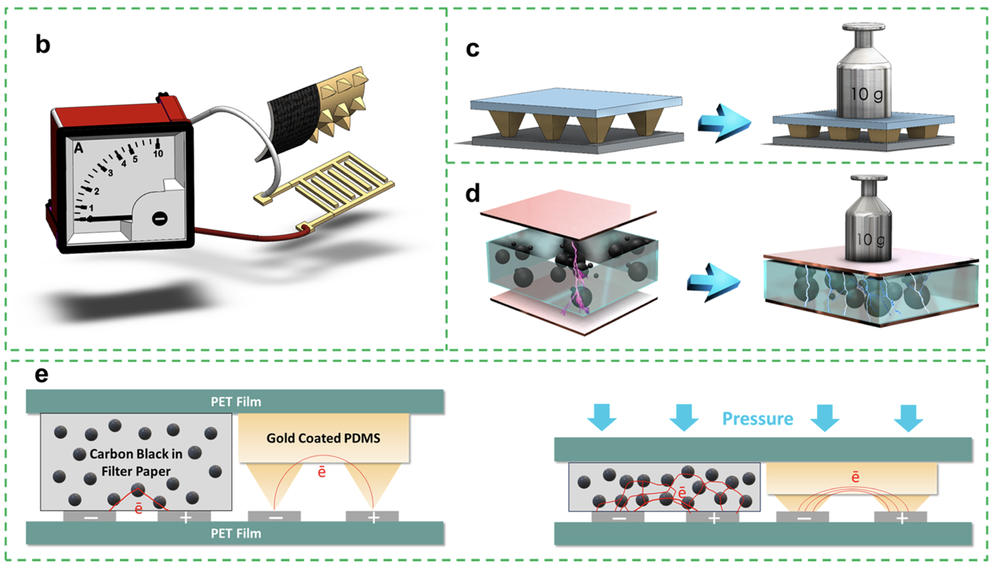
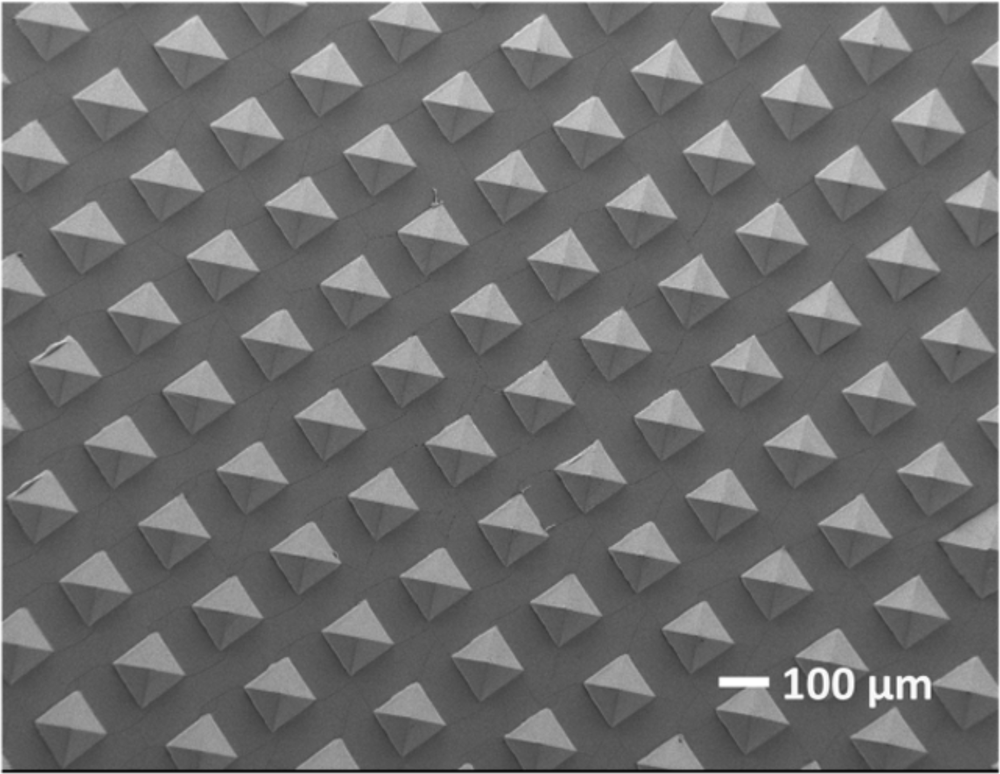
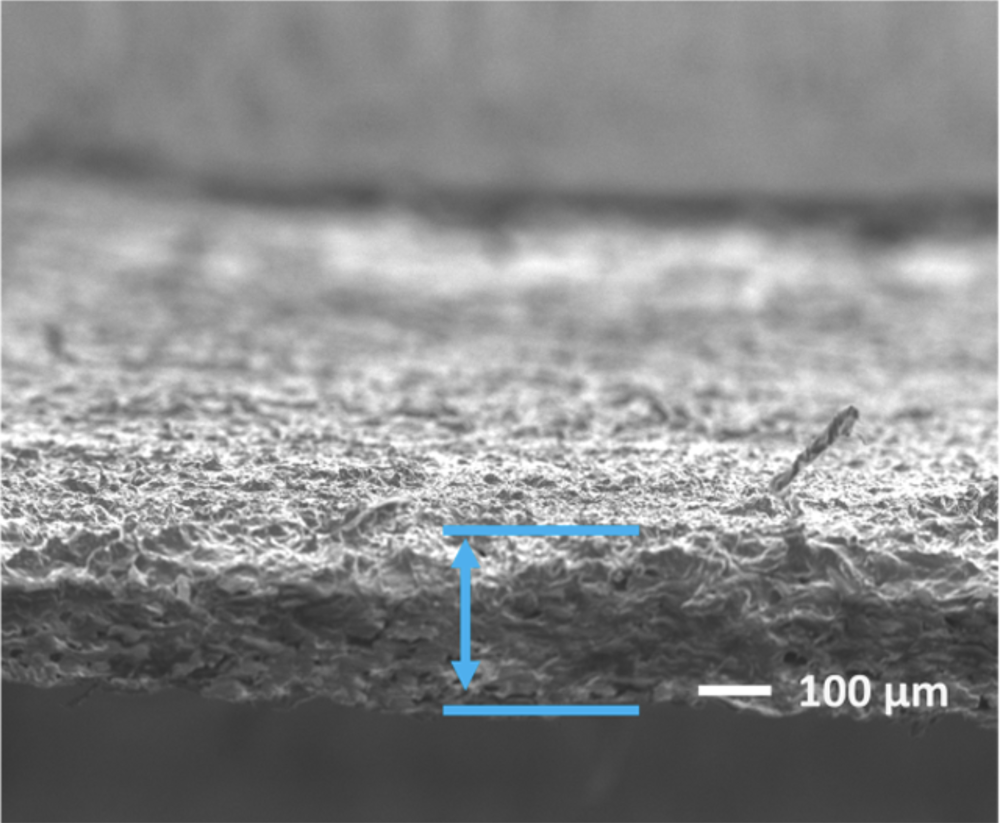
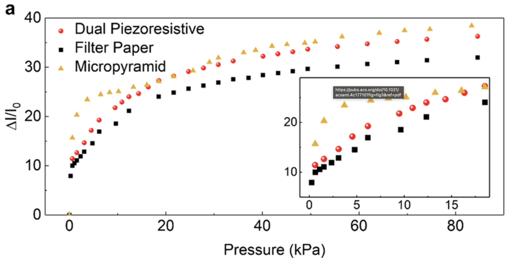
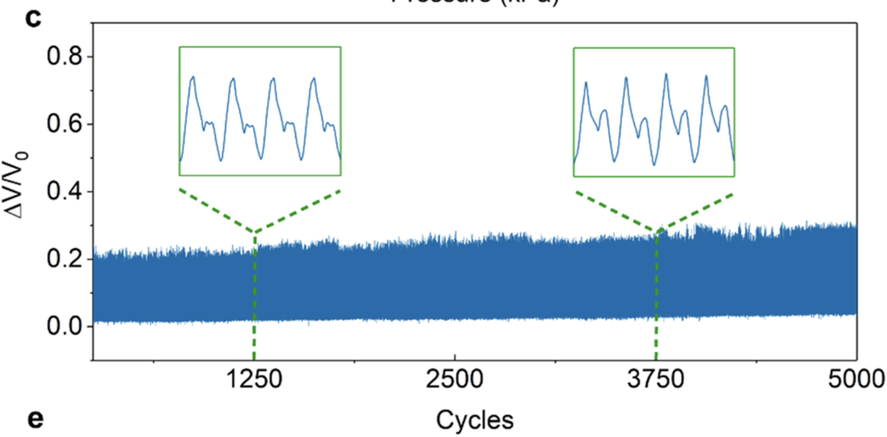
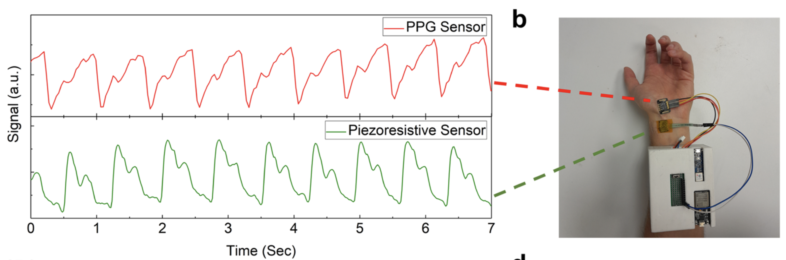

Dual Piezoresistive Sensor System
Wearable Pulse Wave Monitoring
Synergistic Micropyramid & Porous Sensing with PPG Integration
DOI: 10.1021/acsami.4c17710
Journal: ACS Applied Materials & Interfaces (Impact Factor ~9.5)
Role: Co-author - Sensor fabrication, characterization, and data analysis


Project Overview
This research presents a novel dual piezoresistive pressure sensor that synergistically employs two complementary resistance-changing mechanisms to balance the trade-off between high sensitivity and linear response. The sensor combines a micropyramid component (for high sensitivity in low-pressure regime) and a porous carbon black-coated filter paper component (for extended range and linearity). This work also introduces a fully wearable, compact signal collection device (217g) capable of simultaneously collecting signals from multiple sensors, including PPG integration for localized vascular health monitoring.
Motivation & Gap Addressed
Despite successful development of piezoresistive pressure sensors for pulse waveform acquisition, transitioning from laboratory to clinical trials remains challenging due to:
- Testing schemes that don't mirror real-world wearable functionality
- Complexity and size of signal acquisition devices (bulky sourcemeters)
- Challenges related to scaling and manufacturing
- Trade-off between high sensitivity and linear response
Sensor Design & Components
Dual Sensing Mechanisms:
| Component | Mechanism | Pressure Range | Sensitivity |
|---|---|---|---|
| Micropyramid Array | Contact area change with IDE | 0-1 kPa (Low) | 13 kPa⁻¹ (standalone) |
| Porous Carbon Black Filter Paper | Tunneling effect through porous structure | 1-20 kPa (Mid) | 0.7 kPa⁻¹ (standalone) |
| Dual Sensor (Synergistic) | Both mechanisms combined | 0-20 kPa (Full range) | 8.2 kPa⁻¹ (low), 0.79 kPa⁻¹ (mid) |
Materials Used:
- Micropyramid Component: PDMS with 200nm gold sputter coating
- Porous Component: Whatman filter paper (grade 4, 25μm pore size) + carbon black (20 wt%) + silicone grease
- Electrode: Screen-printed interdigitated electrodes (IDEs)
- Packaging: Kapton tape
- Signal Acquisition: ESP32-S, Arduino Nano BLE 33, ADS1256 (24-bit ADC), 1000 mAh 7.2V LiPo battery
- Additional Sensor: Photoplethysmography (PPG) sensor for cross-validation
Fabrication Process
Micropyramid Component:
- Silicon Mold Creation: Laser mask writer (μPG101) → photolithography → dry etching (RIE) → wet etching (KOH bath at 80°C for 4 hours)
- Surface Treatment: Silanization with perfluorooctyl trichlorosilane (1 hour in vacuum desiccator)
- PDMS Casting: 10:1 ratio (cross-linker to base), degassed 30 min, cured at 20°C for 72 hours
- Metal Deposition: 200nm gold sputter coating via PVD
Porous Component:
- Conductive Grease Preparation: Carbon black (20 wt%) mixed with silicone grease
- Coating: 0.1 mL conductive grease coated on filter paper (1×1 cm²)
- Drying: 100°C on hot plate for 24 hours
- Storage: Vacuum desiccator to maintain dryness
Sensor Assembly:
- Micropyramid and porous components positioned side-by-side facing IDE
- External wires soldered to IDE terminals
- Encapsulation with Kapton tape


Finite Element Analysis (FEA)
FEA was conducted to understand the relationship between output current and pressure for materials of varying conductivities.
Key Findings:
- Conductivity below 1 S/m → signal output below 100 nA → poor SNR
- High conductivity coatings (10⁵ S/m, e.g., 200nm gold) → milliamp range current outputs → enables wearable signal acquisition
- Decreasing conductivity from 10³ to 1 S/m reduces sensitivity from 1 to 0.66 kPa⁻¹
Performance Characterization
Pressure Sensitivity Comparison:
| Sensor Type | Low Pressure (0-1 kPa) | Mid Pressure (1-20 kPa) | High Pressure (20-90 kPa) |
|---|---|---|---|
| Micropyramid Only | 13.0 kPa⁻¹ | 0.41 kPa⁻¹ | 0.12 kPa⁻¹ |
| Porous Filter Paper Only | - | 0.70 kPa⁻¹ | 0.09 kPa⁻¹ |
| Dual Piezoresistive Sensor | 8.2 kPa⁻¹ | 0.79 kPa⁻¹ | 0.11 kPa⁻¹ |
Dynamic Response:
- Response Time: 95 ms (loading at 10.1 kPa)
- Recovery Time: 145 ms (unloading at 10.1 kPa)
- Durability: 5000 two-stage compression cycles
- Stepwise Response: Reliable from 9.25 to 86 kPa
- Frequency Response: Tested at 0.5, 1.0, and 1.5 Hz (30-90 BPM)


Wearable Signal Acquisition System
System Components:
- Microcontrollers: ESP32-S + Arduino Nano BLE 33
- ADC: ADS1256 (24-bit external analog-to-digital converter)
- Power: 1000 mAh 7.2V LiPo battery + LM2596 DC-DC step-down (to 5.5V)
- Weight: 217 grams
- Battery Life: 6+ hours continuous operation
- Data Resolution: 30 kHz maximum
- Data Transmission: Bluetooth Low Energy (BLE)
Integrated PPG Sensor:
- Purpose: Cross-validation of piezoresistive signals
- Benefit 1: Rejects motion artifacts that may affect one sensor but not the other
- Benefit 2: Enables simultaneous measurement of blood volume (PPG) and pressure waveforms
- Benefit 3: Provides robust performance under varied environmental conditions
- Benefit 4: Allows assessment of vascular stiffness and pulse wave velocity (PWV)
Pulse Wave Monitoring Results
Wrist Pulse Waveform:
The sensor successfully captured full pulse waveforms from the wrist artery with three characteristic peaks:
- Percussion Peak (P-wave): Systolic peak from ventricular contraction
- Tidal Peak (T-wave): Reflected wave from upper body
- Diastolic Peak (D-wave): Reflection from lower body
Multi-Site Monitoring:
- Wrist: Successful pulse waveform acquisition with all three peaks resolved
- Ankle (Foot): Comparable signal quality to wrist measurement
- Simultaneous PPG + Piezoresistive: Forward-going vs backward-going wave analysis
Comparison with Benchtop Sourcemeter:
The wearable system demonstrated strong correlation with Keithley 2460 sourcemeter readings, confirming the reliability and accuracy of the compact wearable system for practical cardiovascular monitoring.


Material Characterization
Raman Spectroscopy (Conductive Grease):
- G-band (1600 cm⁻¹): Graphitic carbon (sp² hybridized)
- D-band (~1340 cm⁻¹): Defects/disorder (sp³ hybridized carbon)
FTIR Spectroscopy:
- 3400 cm⁻¹: O-H stretching (water absorption in porous carbon black)
- 2800-3000 cm⁻¹: C-H stretching (aliphatic hydrocarbons from grease)
- 1750 cm⁻¹: C=O stretching (esters from synthetic/natural oils)
- 1630 cm⁻¹: C=C stretching (unsaturated hydrocarbons)
Equipment Used
- μPG101 Laser Mask Writer
- Reactive Ion Etching (RIE)
- Physical Vapor Deposition (PVD) Sputtering
- JSM-F100 Scanning Electron Microscope (SEM)
- FT/IR-4100 (FTIR Spectroscopy)
- MultiView 2000TS Raman Spectroscopy
- Mark-10 Force Gauge
- Keithley 2460 Sourcemeter
- ESP32-S / Arduino Nano BLE 33
- ADS1256 24-bit ADC
Downloads
- Full Journal Paper (PDF)
- Supporting Information (PDF)
- Video S1: Simultaneous Pulse Detection (MP4)
- Video S2: Foot Pulse Acquisition (MP4)
- Video S3: PPG IR Susceptibility (MOV)
Key Innovations
- First dual piezoresistive sensor combining micropyramid and porous mechanisms for balanced sensitivity and linearity
- Synergistic design prevents signal saturation while maintaining high sensitivity across full pressure range
- Compact wearable signal acquisition system (217g, 6+ hour battery) replaces bulky benchtop sourcemeters
- Integrated PPG + piezoresistive sensors for cross-validation and localized vascular health monitoring
- Multi-site monitoring capability (wrist and ankle) for comprehensive vascular assessment
- Scalable manufacturing via reusable silicon mold for micropyramids
Technology Readiness Level (TRL) Advancement
This study specifically aimed to enhance the technology readiness level of piezoresistive pressure sensors by addressing:
- Testing Protocols: Real-world wearable functionality testing instead of benchtop-only
- Signal Acquisition: Compact, battery-powered system vs. bulky sourcemeters
- Scaling: Reusable molds and simple fabrication processes
- Linearity vs Sensitivity: Novel dual-mechanism approach to balance trade-offs
Comparison with State-of-the-Art
The dual piezoresistive sensor outperforms many recent piezoresistive sensors in both sensitivity and linearity across the critical blood pressure range (0-20 kPa), as detailed in Supporting Information Table S1.
Funding
- National Science Foundation (NSF) Awards #2423124 and #2412500
- NSF PATHS-UP ERC (Award #1648451)
- Dissertation Year Fellowship (DYF) - Florida International University (B.J. and A.H.C.)
- Doctoral Evidence Acquisition (DEA) Fellowship - Florida International University (B.J.)
Related Publications
- Jafarizadeh, B., Chowdhury, A.H., Sozal, M.S.I., Cheng, Z., Pala, N., Wang, C. "Wearable System Integrating Dual Piezoresistive and Photoplethysmography Sensors for Simultaneous Pulse Wave Monitoring." ACS Applied Materials & Interfaces, 2024, 16, 65402-65413.
- Jafarizadeh, B., Chowdhury, A.H., Khakpour, I., Pala, N., Wang, C. "Design Rules for a Wearable Micro-Fabricated Piezo-Resistive Pressure Sensor." Micromachines, 2022, 13, 838.
- Chowdhury, A.H., Jafarizadeh, B., Pala, N., Wang, C. "Paper-Based Supercapacitive Pressure Sensor for Wrist Arterial Pulse Waveform Monitoring." ACS Applied Materials & Interfaces, 2023, 15, 53043-53052.
Conclusion
This study successfully developed a dual piezoresistive pressure sensor that synergistically combines micropyramid and porous carbon black-coated filter paper components to achieve high sensitivity (8.2 kPa⁻¹ in low range, 0.79 kPa⁻¹ in mid range) and improved linearity across the blood pressure range (0-20 kPa). The sensor demonstrated excellent durability (5000 cycles) and fast response time (95/145 ms). A compact wearable signal acquisition system (217g) was developed, replacing bulky benchtop sourcemeters, and successfully captured full pulse waveforms from both wrist and ankle locations. Integration with PPG sensors enables cross-validation and localized vascular health monitoring. This work significantly advances the technology readiness level of piezoresistive pressure sensors for practical, continuous cardiovascular monitoring applications.